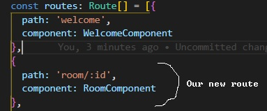

Las lesson we created our route array to handle tying one component to one route. In this lesson we will discuss how to set up a route using parameters. This lesson will be short because next lesson we will talk about how to actually use those parameters using an observable.
In preparation for this lesson, please make a Room Component. A standard base component will do.
Inside our app.module, you should have already added your RoomComponent to your declarations inside your app module. But now we need to add our room component to the route array. I will demonstrate how that should look:
This creates a new route at /room/ and anything after the /room/ is a paramater that we declare with :id. So in the following examples:
http://localhost:4200/room/2
http://localhost:4200/room/3
http://localhost:4200/room/bob
The parameters are 2, 3, and 'bob', respectively. We are not loading a seperate component for 2, 3, and bob, instead that parameter can be treated as a variable that we can pull.
As of the time of this writing, and I could be completely wrong about this, but when you create a parameter on a route, you MUST specify a parameter in the address. You cannot go just to http://localhost:4200/room and display th eroom component, it will not work. You can alternatively create another router that goes to room without the parameter if you reeeeally want to have something there.
Having the parameters are nice, but if we cant get the data of that parameter, it doesn't do us any good: We would just be displaying the exact same thing over and over again. We can do that, but that its getting its own lesson, and it's next!